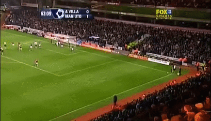
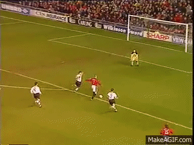
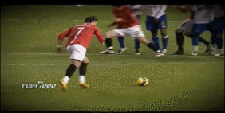
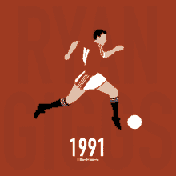

Players info
-
Wayne Rooney
Wayne Mark Rooney (born 24 October 1985) is an English professional footballer and captain for Championship club Derby County. He has played much of his career as a forward, and he has also been used in various midfield roles. Widely considered to be one of the best players of his generation, Rooney is the record goalscorer for both the England national team and Manchester United.

He spent two seasons at the Merseyside club, before moving to Manchester United for £25.6 million in the 2004 summer transfer window where he won 16 trophies and became the only English player, alongside teammate Michael Carrick, to win the Premier League, FA Cup, UEFA Champions League, League Cup, UEFA Europa League, and FIFA Club World Cup.
He scored 253 goals for United in all competitions to make him their top goalscorer of all time, with 183 Premier League goals being the most scored by a player for any single club. Rooney's 208 Premier League goals make him the Premier League's second-top scorer of all time. He also has the third-highest number of assists in the Premier League, with 103.
Rooney won the PFA Players' Player of the Year and the FWA Footballer of the Year awards for the 2009–10 season, and he has won the Premier League Player of the Month award five times throughout his career. He came fifth in the vote for the 2011 FIFA Ballon d'Or, and he was named in the FIFA FIFPro World XI for 2011. He won the Goal of the Season award by the BBC's Match of the Day poll on three occasions, with his bicycle kick against city rivals Manchester City winning the Premier League 20 Seasons Awards Best Goal award.
-
Paul Scholes
Paul Scholes (born 16 November 1974) is an English football coach and former player, as well as a co-owner of Salford City. He spent his entire professional playing career with Manchester United, for whom he scored over 150 goals in more than 700 appearances between 1993 and 2013.
Scholes came through the Manchester United youth academy as one of Fergie's Fledglings (a group of players recruited by Manchester United under the management of Sir Alex Ferguson). Scholes made his full debut for Manchester United in the 1994–95 season. He went on to make 718 appearances for United, the third-highest number of appearances by any player for the club.
Scholes announced his retirement from playing in May 2011 and was appointed as a coach at Manchester United. However, he returned to playing in January 2012, and went on to play one more season for the club before retiring again in May 2013. With United, Scholes won 25 trophies including 11 Premier League titles (more than any other English player) and two UEFA Champions League titles.
-
Eric Cantona
Eric Daniel Pierre Cantona (born 24 May 1966) is a French actor, director, producer, and former professional footballer.He played for Auxerre, Martigues, Marseille, Bordeaux, Montpellier, Nîmes, and Leeds United before ending his career at Manchester United, where he won four Premier League titles in five years and two League and FA Cup Doubles. He won the league championship in seven of his last eight full seasons as a professional. At international level, he played for the French national team.
Cantona is often regarded as having played a key role in the revival of Manchester United as a footballing force in the 1990s and having an iconic status at the club.[5] He wore the No. 7 shirt at Manchester United, and is known for turning up his collar.[6] Cantona is affectionately nicknamed by Manchester United fans as "King Eric" and was voted as the team's greatest ever player by Inside United magazine.
-
Cristiano Ronaldo
Ronaldo became Manchester United's first-ever Portuguese player when he signed before the 2003–04 season. His transfer fee of £12.24 million made him, at the time, the most expensive teenager in English football history.
Although he requested the number 28, his number at Sporting, he received the number 7 shirt, which had previously been worn by such United players as George Best, Eric Cantona and David Beckham. Wearing the number 7 became an extra source of motivation for Ronaldo. A key element in his development during his time in England proved to be his manager, Alex Ferguson, of whom he later said, "He's been my father in sport, one of the most important and influential factors in my career."
Ronaldo scored a total of 42 goals in all competitions during the 2007–08 season, his most prolific campaign during his time in England.
-
Ryan Giggs
Ryan Joseph Giggs OBE (born Wilson; 29 November 1973)is a Welsh football coach and former player. He is the manager of the Wales national team and a co-owner of Salford City. Giggs played his entire professional career for Manchester United and briefly served as the club's interim manager. He is widely considered to be one of the greatest players of his generation.
Giggs is one of the most decorated footballers of all time. During his time at United, he won 13 Premier League winner's medals, four FA Cup winner's medals, three League Cup winner's medals, two UEFA Champions League winner's medals, a FIFA Club World Cup winners medal, an Intercontinental Cup winner's medal, a UEFA Super Cup winner's medal and nine FA Community Shield winner's medals. Manchester United and Liverpool are the only clubs in English football history to have won more league championships than Giggs. Giggs captained United on numerous occasions, particularly in the 2007–08 season when regular captain Gary Neville was ruled out with various injuries.
-
David Beckham
Beckham's professional club career began with Manchester United, where he made his first-team debut in 1992 at age 17. With United, he won the Premier League title six times, the FA Cup twice, and the UEFA Champions League in 1999.

Known for his range of passing, crossing ability and bending free-kicks as a right winger, Beckham has been hailed as one of the greatest and most recognisable midfielders of his generation, as well as one of the best set-piece specialists of all time. He was runner-up in the Ballon d'Or in 1999, twice runner-up for FIFA World Player of the Year and in 2004 was named by Pelé in the FIFA 100 list of the world's greatest living players. He was inducted into the English Football Hall of Fame in 2008. A global ambassador for the sport, Beckham is regarded as a British cultural icon.